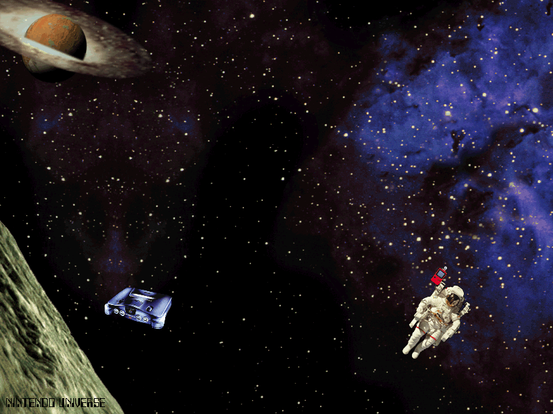
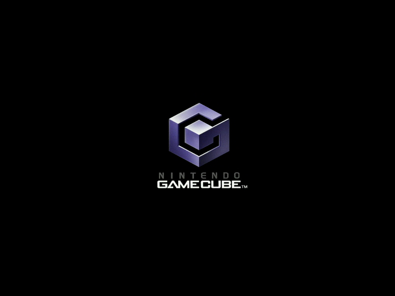

Nintendo Screensavers

Nintendo Universe
Archived from an old version of Nintendo of Norway's website (nintendo.no).

DOWNLOAD
 .exe file zipped (385 KB)
.exe file zipped (385 KB)
Nintendo Gaming 24:7

Note: This is a 16-bit program and requires special programs to install on 64-bit Windows, such as otvdm.
DOWNLOAD
.exe file zipped (Windows) (1.25 MB)
.sit file (Mac OS 9) (1.17 MB)
Game Boy Advance

Note: This is a 16-bit program and requires special programs to install on 64-bit Windows, such as otvdm.
DOWNLOAD
.exe file zipped (Windows) (354 KB)
.sit file (Mac OS 9) (336 KB)
Game Boy Advance Platinum

DOWNLOAD
.exe file zipped (1.30 MB)
Game Boy Advance SP

DOWNLOAD
.exe file zipped (2.01 MB)
Game Boy Advance SP Tribal Edition

DOWNLOAD
.exe file zipped (1.97 MB)
Nintendo GameCube
Archived from an old version of Nintendo of Norway's website (nintendo.no).

DOWNLOAD
.exe file zipped (1.20 MB)
Nintendo GameCube (2)

DOWNLOAD
.exe file zipped (11 MB)
Nintendo GameCube (3)

Note: This is a 16-bit program and requires special programs to install on 64-bit Windows, such as otvdm.
DOWNLOAD
.exe file zipped (Windows) (643 KB)
.sit file (Mac OS 9) (621 KB)
Classic NES Series
 Screensaver.png)
DOWNLOAD
.exe file zipped (651 KB)
Classic NES Series (2)

DOWNLOAD
.exe file zipped (833 KB)
Nintendo DS
 Screensaver.png)
DOWNLOAD
.exe file zipped (1.90 MB)
Nintendo DS (2)
 Screensaver.png)
DOWNLOAD
.exe file zipped (1.84 MB)